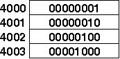
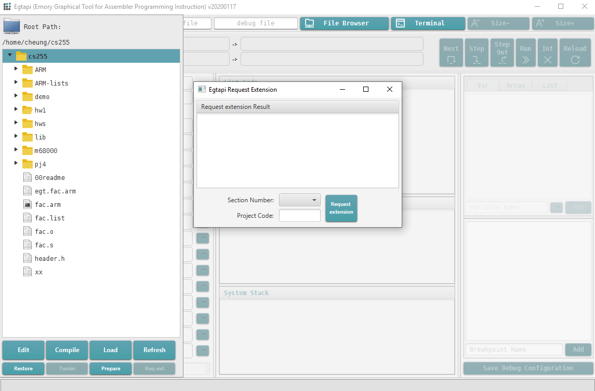
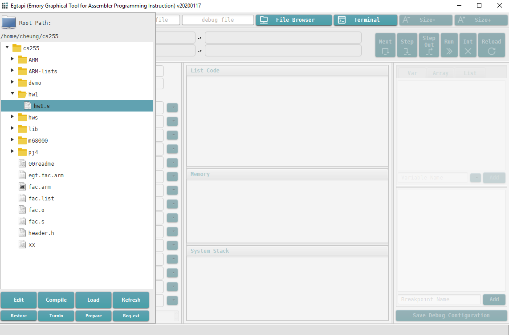
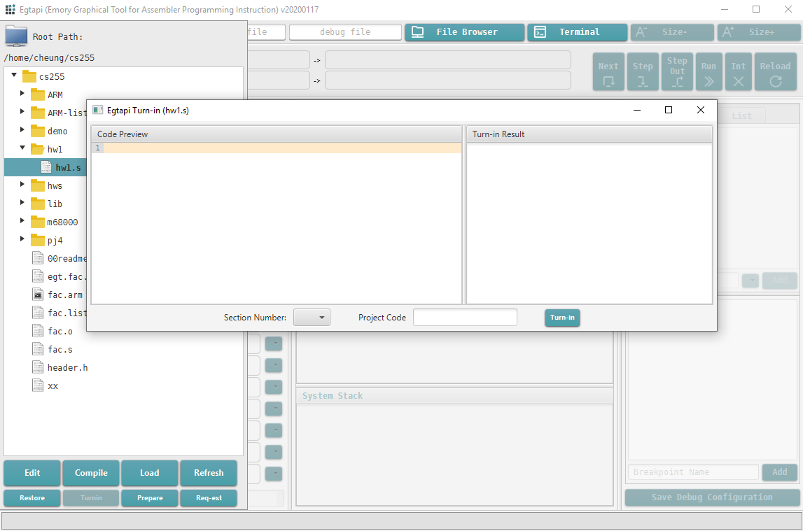

You can use EGTAPI to edit your copy of the file "hw1.s" and enter the answers for this homework.
Note: When you're done, you must turnin your work
See the end of this write up for instructions on how to turn in this assignment.
|  |
Or you can use this Wikipedia page
The Morse code is a signalling code designed to transmit English text by raido pulses (beeps).
We denote a short pulse as • (dot) and a long pulse as - (dash)
Decode this message in Morse code:
•••• • •-•• •-•• ---
Message:
|
The ASCII code is a binary code to represent the English characters
Decode this message in ASCII code:
01000110 01101001 01110011 01101000
Message:
|
01000001
Corresponding decimal number:
|
What is the decimal number that corresponds to this binary number ?
01000001
Character represented by ASCII code:
|
What is the character that is represented by this binary number ?
I is
|
This is a partial content of the computer memory:
Suppose the instruction instrX updates a general purpose register R0 to 4000.
In this case, which is the next instruction that will be fetched from memory after the CPU finished executing instrX ?
The answer is a binary number !
In this case, which is the next instruction that will be fetched from memory after the CPU finished executing instrX ?
The answer is a binary number !
Extension requests must be made before the assignment is due !!!
"Free" extension requests are granted for illness and family emergencies.
To make an extension request, do the following in EGTAPI:
1. Click on File Browser in EGTAPI
2. Click on Req ext (lower right corner) in the File Browser menu
The "Egtapi Extension Request" window will pop up:

3. In the "Section Number" drop down tab:
Select "1" if you are in Section 1
Select "2" if you are in Section 2
4. Enter "Project Code": hw1
5. Click the "Request extension" button
6. You will see the request result in the right most panel.
If your request is successfull, you will see:
Extension request was successful:
Turn hw1 in before ..... (new due date)
in the "Request extension" pop up window (you may need to scroll down)
|
/home/cs255001/req-ext hw1 // If you're in section 1
or
/home/cs255002/req-ext hw1 // If you're in section 2
|
You request will be successful if you have not exceeded the maximum number of "free" (no-questions-asked) requests allowed
|
Watch this video on how to turn in a file with EGTAPI: click here
1. Click on File Browser in EGTAPI
2. Select the file that you want to turn in

In this case, select the file "hw1.s" inside your hw1 folder
3. After selecting the file (in this case: "hw1.s"), click Turnin in the File Browser menu
The "Egtapi Turn-in" window will pop up:

4. In the "Section Number" drop down tab:
Select "1" if you are in Section 1
Select "2" if you are in Section 2
5. Enter "Project Code": hw1
6. Click the "Turn in" button
7. You will see the turn in result in the right most panel.
Make sure that your see the message: "Program ... has been successfully turned in..."
|
Alternately, you can turn in your file using the EGTAPI Terminal:
1. Open the EGTAPI Terminal (click on "Terminal")
2. Enter these command in the lower input area of the Terminal panel:
(a) cd ~/cs255/hw1 (go to your hw1 folder)
(b) /home/cs255001/turnin hw1.s hw1 // If you're in section 1
or
(b) /home/cs255002/turnin hw1.s hw1 // If you're in section 2
|
If you want to see what you have turned in, then
1. Open the EGTAPI Terminal (click on "Terminal")
2. Enter this command in the lower input area of the Terminal panel:
/home/cs255001/turnin // If you're in section 1
or
/home/cs255002/turnin // If you're in section 2
|
Students will be graded partially on the basis of their homework assignments. These homework assignments are to be treated as examinations, and are expected to be your individual work. While discussions with other students in the course may be permitted or encouraged by your instructor, you should write your program yourself. Your instructor (and any teaching assistants assigned to the course) will be glad to help you to the extent that he or she feels reasonable. Submissions based on other students solutions in prior offerings of the course specifically violate these guidelines, as do submissions prepared with the help of an outside "tutor". You should take precautions to protect the confidentiality of your work, do not collaborate on questions that you turn in for a grade, do not show your solution to a fellow student, not even after the due date for some students may have receive extension. All submissions should include a comment statement near the top of the program of the form:
THIS HOMEWORK IS MY OWN WORK, IT WAS WRITTEN WITHOUT CONSULTING A TUTOR OR WORK WRITTEN BY OTHER STUDENTS - your name |
Cases of apparent plagiarism or collusion will be referred to the Honor Council.